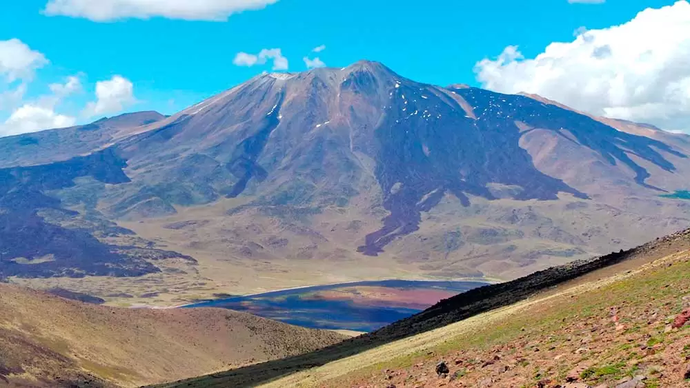

Cerros y Montañas en la República Argentina



En esta página podremos ver información de cada cerro y montaña para los interesados en Trecking
Lo que presentamos en esta página
- Información
- Refugios y paradas
- Precios